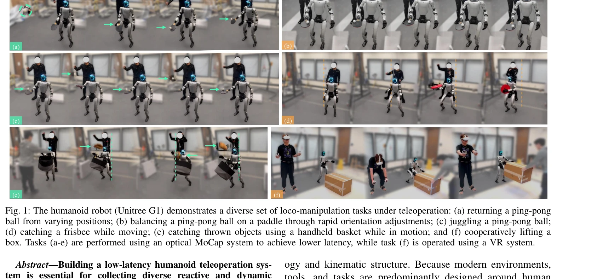
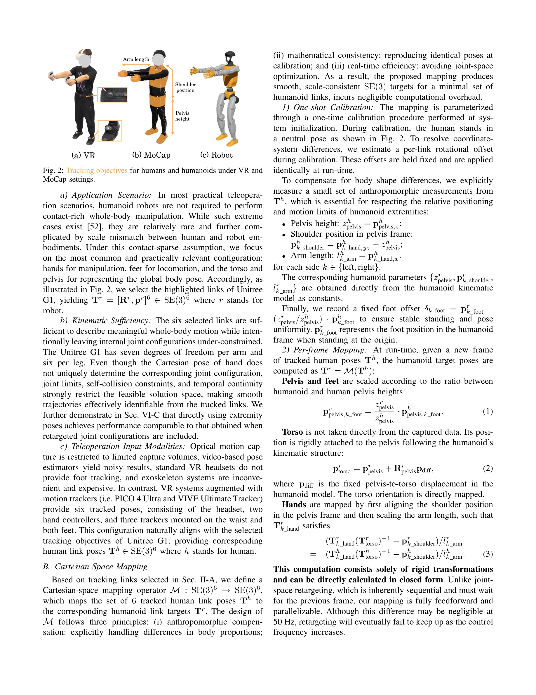

저자: Ziyan Xiong, Lixing Fang, Junyun Huang, Kashu Yamazaki, Hao Zhang, Chuang Gan | 날짜: 2026-02-11 | URL: https://arxiv.org/abs/2602.11321

Fig. 1: The humanoid robot (Unitree G1) demonstrates a diverse set of loco-manipulation tasks under teleoperation: (a) r
ExtremControl은 SE(3) 포즈 기반의 직접 제어와 velocity feedforward 제어를 통해 humanoid teleoperation의 지연시간을 50ms까지 단축하는 저지연 전신 제어 프레임워크이다.
Fig. 1: The humanoid robot (Unitree G1) demonstrates a diverse set of loco-manipulation tasks under teleoperation: (a) r

Fig. 2: Tracking objectives for humans and humanoids under VR and
총평: ExtremControl은 velocity feedforward와 direct extremity control을 결합하여 humanoid teleoperation의 지연시간을 4배 단축하고 고속 반응 작업을 실현한 혁신적 연구로, 실제 로봇에서의 높은 응답성 달성과 통합된 시스템 구현으로 실용적 가치가 우수하다.